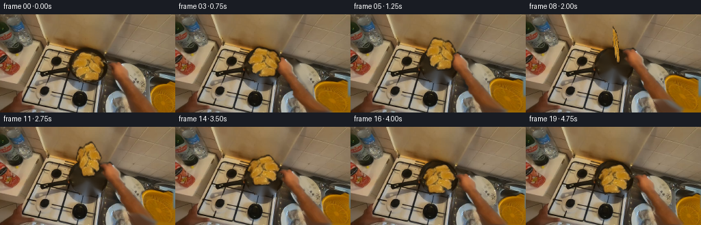
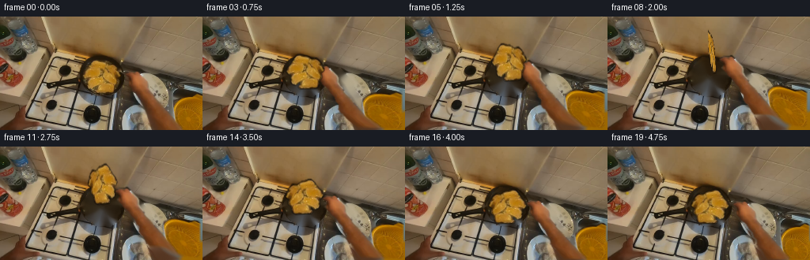
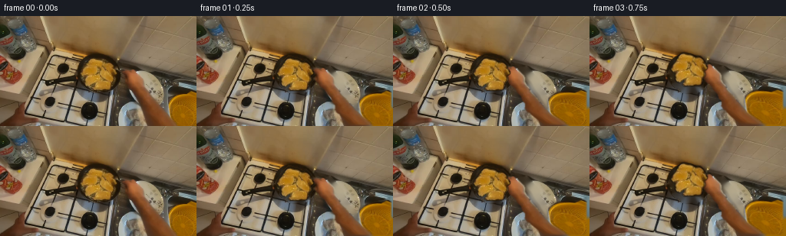

CODING AGENTS AS PIXEL WORLD MODELS
traex/DeepSeek-V4.1-Flash · common50_0028
点击播放 · 原生 RGB 像素
逐轮保存的候选
回放视频、检查图与代码变化。
每份候选均可单独播放。实际图片检查记录在下方工具轨迹中。
候选 01播放与检查图
点击播放 · 原生 RGB 像素

展开代码变化
--- 上一保存版本
+++ 本次保存版本
@@ -0,0 +1,236 @@
+from pathlib import Path
+
+import cv2
+import numpy as np
+from PIL import Image
+from scipy import ndimage
+
+import artifact_io
+
+
+ROOT = Path(__file__).resolve().parent
+WIDTH, HEIGHT = 256, 144
+N_FRAMES = 20
+
+
+def _largest_component(mask):
+ labels, count = ndimage.label(mask)
+ if count == 0:
+ return mask
+ sizes = ndimage.sum(mask, labels, range(1, count + 1))
+ return labels == int(np.argmax(sizes)) + 1
+
+
+def _feather(mask, radius=1.0):
+ return cv2.GaussianBlur(mask.astype(np.float32), (0, 0), radius)
+
+
+def _alpha_over(base, layer, alpha):
+ return np.clip(
+ layer.astype(np.float32) * alpha[:, :, None]
+ + base.astype(np.float32) * (1.0 - alpha[:, :, None]),
+ 0,
+ 255,
+ ).astype(np.uint8)
+
+
+def _smoothstep(value):
+ value = np.clip(value, 0.0, 1.0)
+ return value * value * (3.0 - 2.0 * value)
+
+
+def _build_layers(source):
+ image = source.astype(np.float32)
+ red, green, blue = (image[:, :, i] for i in range(3))
+ color_red = (
+ (red > green + 34)
+ & (green > blue + 10)
+ & (red > 92)
+ & (blue < 105)
+ )
+
+ # The steak is the compact warm-colored island in the upper-left of the pan.
+ food_seed = np.zeros((HEIGHT, WIDTH), dtype=bool)
+ food_seed[48:101, 98:154] = color_red[48:101, 98:154]
+ food = _largest_component(food_seed)
+ food = ndimage.binary_closing(food, iterations=2)
+ food = ndimage.binary_fill_holes(food)
+ food = ndimage.binary_dilation(food, iterations=2)
+ food[:50] = False
+ food[102:] = False
+ food[:, :98] = False
+ food[:, 156:] = False
+ food = ndimage.binary_fill_holes(food)
+
+ # The hand and forearm enter from the lower-right corner. Keep the pan handle
+ # in the plate so that it is exposed as the fingers move toward the steak.
+ hand_seed = np.zeros((HEIGHT, WIDTH), dtype=bool)
+ hand_seed[62:, 156:] = color_red[62:, 156:]
+ hand = _largest_component(hand_seed)
+ hand = ndimage.binary_closing(hand, iterations=3)
+ hand = ndimage.binary_fill_holes(hand)
+ hand = ndimage.binary_dilation(hand, iterations=2)
+ hand[:64] = False
+ hand[:, :154] = False
+
+ plate_mask = ndimage.binary_dilation(food | hand, iterations=3).astype(np.uint8) * 255
+ plate = cv2.inpaint(source, plate_mask, 7, cv2.INPAINT_TELEA)
+
+ # Recover some fine pan texture in the large region previously occupied by
+ # the arm. A local median keeps the inpainting from looking like flat paint.
+ soft_pan = cv2.medianBlur(plate, 7)
+ plate = _alpha_over(plate, soft_pan, _feather(hand.astype(np.uint8), 2.5) * 0.35)
+
+ food_alpha = _feather(food.astype(np.uint8), 0.65)
+ hand_alpha = _feather(hand.astype(np.uint8), 0.7)
+ return plate, food, food_alpha, hand, hand_alpha
+
+
+def _warp_hand(source, hand_alpha, amount_x, amount_y):
+ yy, xx = np.mgrid[0:HEIGHT, 0:WIDTH].astype(np.float32)
+ # Preserve the wrist attachment at the right and bottom edges.
+ weight_x = 1.0 - _smoothstep((xx - 198.0) / 56.0)
+ weight_y = 1.0 - _smoothstep((yy - 124.0) / 23.0)
+ weight = np.clip(0.18 + 0.82 * weight_x * weight_y, 0.0, 1.0)
+ dx = amount_x * weight
+ dy = amount_y * weight
+
+ map_x = np.ascontiguousarray(xx - dx, dtype=np.float32)
+ map_y = np.ascontiguousarray(yy - dy, dtype=np.float32)
+ layer = cv2.remap(
+ source,
+ map_x,
+ map_y,
+ interpolation=cv2.INTER_CUBIC,
+ borderMode=cv2.BORDER_REPLICATE,
+ )
+ alpha = cv2.remap(
+ hand_alpha,
+ map_x,
+ map_y,
+ interpolation=cv2.INTER_LINEAR,
+ borderMode=cv2.BORDER_CONSTANT,
+ borderValue=0,
+ )
+ return layer, alpha
+
+
+def _meat_pose(frame_index):
+ # Approach, lift, turn, then settle. The steak is edge-on at the apex.
+ if frame_index <= 2:
+ return 0.0, 0.0, (0.0, 0.0)
+ t = min(1.0, (frame_index - 2) / 14.0)
+ arc = np.sin(np.pi * t)
+ theta = np.pi * _smoothstep(min(1.0, t * 1.08))
+ x = 2.0 * arc + 1.8 * np.sin(2.0 * np.pi * t)
+ y = -31.0 * arc + 1.2 * np.sin(3.0 * np.pi * t)
+ roll = np.deg2rad(-7.0 * np.sin(np.pi * t))
+ return x, y, (theta, roll)
+
+
+def _transform_meat(source, mask, alpha, center, pose):
+ x, y, (theta, roll) = pose
+ scale_x = float(np.cos(theta))
+ # A small vertical stretch at the edge-on point preserves a readable steak
+ # silhouette instead of collapsing to a one-pixel line.
+ scale_y = 1.0 + 0.24 * abs(float(np.sin(theta)))
+ c, s = np.cos(roll), np.sin(roll)
+ linear = np.array(
+ [
+ [scale_x * c, -scale_y * s],
+ [scale_x * s, scale_y * c],
+ ],
+ dtype=np.float32,
+ )
+ cx, cy = center
+ matrix = np.array(
+ [
+ [linear[0, 0], linear[0, 1], cx + x - linear[0, 0] * cx - linear[0, 1] * cy],
+ [linear[1, 0], linear[1, 1], cy + y - linear[1, 0] * cx - linear[1, 1] * cy],
+ ],
+ dtype=np.float32,
+ )
+ layer = cv2.warpAffine(
+ source,
+ matrix,
+ (WIDTH, HEIGHT),
+ flags=cv2.INTER_CUBIC,
+ borderMode=cv2.BORDER_CONSTANT,
+ borderValue=0,
+ )
+ warped_alpha = cv2.warpAffine(
+ alpha,
+ matrix,
+ (WIDTH, HEIGHT),
+ flags=cv2.INTER_LINEAR,
+ borderMode=cv2.BORDER_CONSTANT,
+ borderValue=0,
+ )
+ return layer, warped_alpha
+
+
+def _add_contact_shadow(frame, mask, center, pose):
+ _, y, (theta, _) = pose
+ if abs(np.sin(theta)) < 0.05:
+ return frame
+ cx, cy = center
+ shadow_alpha = cv2.GaussianBlur(mask.astype(np.float32), (0, 0), 3.0) * 0.20
+ shadow_alpha = np.roll(shadow_alpha, (7, 4), axis=(0, 1))
+ # The shadow stays in the pan and does not follow the steak into the air.
+ shadow_alpha *= 1.0 - min(1.0, abs(y) / 23.0)
+ dark = frame.astype(np.float32) * 0.68
+ return _alpha_over(frame, dark, shadow_alpha)
+
+
+def generate():
+ source = np.asarray(Image.open(ROOT / "first_frame.png").convert("RGB"), dtype=np.uint8)
+ assert source.shape == (HEIGHT, WIDTH, 3)
+ plate, food, food_alpha, hand, hand_alpha = _build_layers(source)
+
+ ys, xs = np.where(food)
+ food_center = (float(xs.mean()), float(ys.mean()))
+ food_rgb = source * food_alpha[:, :, None]
+
+ frames = []
+ for index in range(N_FRAMES):
+ frame = plate.copy()
+
+ if index <= 2:
+ approach = _smoothstep(index / 2.0)
+ elif index <= 8:
+ approach = 1.0
+ elif index <= 16:
+ approach = 1.0 - 0.72 * _smoothstep((index - 8) / 8.0)
+ else:
+ approach = 0.28 * (1.0 - _smoothstep((index - 16) / 3.0))
+
+ meat_pose = _meat_pose(index)
+ x_shift = -17.0 * approach
+ y_shift = -4.0 * approach + 0.48 * meat_pose[1]
+ hand_layer, warped_hand_alpha = _warp_hand(source, hand_alpha, x_shift, y_shift)
+ frame = _alpha_over(frame, hand_layer, warped_hand_alpha)
+
+ frame = _add_contact_shadow(frame, food_alpha, food_center, meat_pose)
+ meat_layer, warped_meat_alpha = _transform_meat(
+ food_rgb, food, food_alpha, food_center, meat_pose
+ )
+ frame = _alpha_over(frame, meat_layer, warped_meat_alpha)
+
+ # A restrained warm bounce keeps the pan and food in the same light.
+ if index >= 5:
+ glow = np.clip(np.sin(np.pi * min(1.0, (index - 5) / 14.0)), 0, 1)
+ warm = frame.astype(np.float32)
+ warm[:, :, 0] *= 1.0 + 0.018 * glow
+ warm[:, :, 1] *= 1.0 + 0.008 * glow
+ frame = np.clip(warm, 0, 255).astype(np.uint8)
+
+ frames.append(frame)
+
+ frames[0] = source.copy()
+ return np.asarray(frames, dtype=np.uint8)
+
+
+if __name__ == "__main__":
+ result = generate()
+ artifact_io.save(result, ROOT)
+ print(f"saved {len(result)} frames to {ROOT}")
候选 02播放与检查图
点击播放 · 原生 RGB 像素


展开代码变化
--- 上一保存版本
+++ 本次保存版本
@@ -169,6 +169,27 @@
return layer, warped_alpha
+def _add_turn_highlight(frame, mask, center, pose):
+ x, y, (theta, roll) = pose
+ facing = abs(float(np.sin(theta)))
+ if facing < 0.08:
+ return frame
+ cx, cy = center[0] + x, center[1] + y
+ yy, xx = np.mgrid[0:HEIGHT, 0:WIDTH].astype(np.float32)
+ c, s = np.cos(roll), np.sin(roll)
+ dx, dy = xx - cx, yy - cy
+ local_x = c * dx + s * dy
+ local_y = -s * dx + c * dy
+ highlight = np.exp(-((local_x + 4.0) / 15.0) ** 2 - ((local_y + 5.0) / 8.0) ** 2)
+ highlight = cv2.GaussianBlur(highlight.astype(np.float32), (0, 0), 1.3)
+ highlight *= cv2.GaussianBlur(mask.astype(np.float32), (0, 0), 1.0) * 0.16 * facing
+ warm = frame.astype(np.float32)
+ warm[:, :, 0] += 28.0 * highlight
+ warm[:, :, 1] += 17.0 * highlight
+ warm[:, :, 2] += 3.0 * highlight
+ return np.clip(warm, 0, 255).astype(np.uint8)
+
+
def _add_contact_shadow(frame, mask, center, pose):
_, y, (theta, _) = pose
if abs(np.sin(theta)) < 0.05:
@@ -215,6 +236,9 @@
food_rgb, food, food_alpha, food_center, meat_pose
)
frame = _alpha_over(frame, meat_layer, warped_meat_alpha)
+ frame = _add_turn_highlight(
+ frame, warped_meat_alpha, food_center, meat_pose
+ )
# A restrained warm bounce keeps the pan and food in the same light.
if index >= 5:
可观测工具轨迹
实际执行的命令与返回图片。
命令 1exit 0
/bin/bash -c "pwd && rg --files -g 'prompt.txt' -g 'GENERATION_RULES.md' -g 'first_frame.png' -g '"'!*.mp4'"' -g '"'!*.mov'"'"
命令 2exit 0
/bin/bash -c 'git status --short --branch'
命令 3exit 0
/bin/bash -c 'cat prompt.txt'
命令 4exit 0
/bin/bash -c 'cat GENERATION_RULES.md'
命令 5exit 0
/bin/bash -c 'file first_frame.png && identify first_frame.png 2>/dev/null || true'
命令 6exit 0
/bin/bash -c "find . -maxdepth 2 -type f -not -path './.git/*' -printf '%p\\n' | sort | head -100"
命令 7exit 0
/bin/bash -c 'cat task_spec.json'
命令 8exit 0
/bin/bash -c "sed -n '1,240p' artifact_io.py"
命令 9exit 0
/bin/bash -c "sed -n '1,220p' player_template.html"
命令 10exit 0
/bin/bash -c "python - <<'PY'
from PIL import Image
import numpy as np
im=np.array(Image.open('first_frame.png').convert('RGB'))
print(im.shape, im.dtype, im.min(), im.max(), im.mean(axis=(0,1)))
# top colors exact and quantized
u,c=np.unique(im.reshape(-1,3),axis=0,return_counts=True)
idx=np.argsort(c)[-30:][::-1]
for i in idx: print(tuple(u[i]), int(c[i]))
q=(im//16*16)
u,c=np.unique(q.reshape(-1,3),axis=0,return_counts=True)
idx=np.argsort(c)[-25:][::-1]
print('QUANT')
for i in idx: print(tuple(u[i]), int(c[i]))
PY"命令 11exit 0
/bin/bash -c "python - <<'PY'
from PIL import Image
import numpy as np
im=np.array(Image.open('first_frame.png').convert('RGB'))
h,w,_=im.shape
# 32x18 block mean as hex grid
for yy in range(18):
row=[]
for xx in range(32):
b=im[yy*8:(yy+1)*8,xx*8:(xx+1)*8].mean((0,1)).astype(int)
row.append('%02x%02x%02x'%tuple(b))
print('%02d '%yy+' '.join(row))
PY"命令 12exit 0
/bin/bash -c "python - <<'PY'
from PIL import Image
import numpy as np
im=np.array(Image.open('first_frame.png').convert('RGB')).astype(float)
h,w,_=im.shape
for yy in range(36):
row=''
for xx in range(64):
b=im[yy*4:(yy+1)*4,xx*4:(xx+1)*4].mean((0,1))
y=0.2126*b[0]+0.7152*b[1]+0.0722*b[2]
row += ' .:-=+*#%@'[min(9,int(y/256*10))]
print(f'{yy*4:03d} '+row)
PY"命令 13exit 0
/bin/bash -c "python - <<'PY'
from PIL import Image
import numpy as np
im=np.array(Image.open('first_frame.png').convert('RGB')).astype(np.float32)
h,w,_=im.shape
# representative sample, kmeans
rng=np.random.default_rng(2)
pix=im.reshape(-1,3)
s=pix[rng.choice(len(pix),5000,replace=False)]
k=10
cent=s[rng.choice(len(s),k,replace=False)]
for _ in range(30):
d=((s[:,None,:]-cent[None,:,:])**2).sum(2)
a=d.argmin(1)
nc=np.array([s[a==j].mean(0) if np.any(a==j) else cent[j] for j in range(k)])
if np.max(abs(nc-cent))<.01: break
cent=nc
# assign all
d=((pix[:,None,:]-cent[None,:,:])**2).sum(2)
a=d.argmin(1).reshape(h,w)
chars='0123456789'
print('clusters')
for i,c in enumerate(cent): print(i, np.round(c).astype(int), (a==i).sum())
print('map 64x36')
for yy in range(36):
row=''
for xx in range(64):
vals=a[yy*4:(yy+1)*4,xx*4:(xx+1)*4].ravel()
row += chars[np.bincount(vals,minlength=k).argmax()]
print(f'{yy*4:03d} '+row)
PY"命令 14exit 0
/bin/bash -c "python - <<'PY'
from PIL import Image
import numpy as np
try:
from scipy import ndimage
print('scipy yes')
except Exception as e: print('scipy no',e)
im=np.array(Image.open('first_frame.png').convert('RGB'))
# HSV
hsv=np.array(Image.open('first_frame.png').convert('HSV'))
H,S,V=[hsv[:,:,i].astype(int) for i in range(3)]
r,g,b=[im[:,:,i].astype(int) for i in range(3)]
masks={
'bright': V>160,
'whitegray':(V>125)&(S<55),
'dark': V<50,
'skin1':(r>120)&(r>g+20)&(g>b+5)&(S>50)&(V>70),
'skin2':(r>140)&(g>90)&(g<180)&(b<130)&(r>g+15),
'orange':(r>130)&(g>55)&(g<140)&(b<60)&(r>g+50),
'red':(r>90)&(r>g*1.5)&(r>b*1.7),
}
for name,m in masks.items():
ys,xs=np.where(m)
print(name, len(xs), 'bbox', (xs.min(),ys.min(),xs.max(),ys.max()) if len(xs) else None, 'mean',im[m].mean(0) if len(xs) else '')
lab,n=ndimage.label(m)
sizes=ndimage.sum(m,lab,range(1,n+1))
idx=np.argsort(sizes)[-5:][::-1]
for j in idx:
if sizes[j]<20: continue
yy,xx=np.where(lab==j+1)
print(' comp',int(sizes[j]),(xx.min(),yy.min(),xx.max(),yy.max()))
# grid avg stats every 32x16 cell
print('grid mean/sat/value')
for yy in range(0,144,16):
row=[]
for xx in range(0,256,32):
sl=im[yy:yy+16,xx:xx+32].mean((0,1)).astype(int)
row.append('%02x%02x%02x'%tuple(sl))
print(f'{yy:03d}', ' '.join(row))
PY"命令 15exit 0
/bin/bash -c "python - <<'PY'
from PIL import Image
import numpy as np
im=np.array(Image.open('first_frame.png').convert('RGB')).astype(float)
r,g,b=im[:,:,0],im[:,:,1],im[:,:,2]
mx=im.max(2); mn=im.min(2); V=mx; S=(mx-mn)/(mx+1e-6)*255
# categories per 4px cells by majority pixel category
cats=np.full((144,256),'.',dtype='<U1')
# default light wood
cats[:]='.'
cats[(V<55)]='D'
cats[(V>=55)&(V<90)]='d'
cats[(V>=90)&(V<130)]='m'
cats[(V>=130)&(V<170)]='+'
cats[(V>=170)]='W'
# orange/russet override
orange=(r>g+35)&(g>b+15)&(b<100)&(V>60)
cats[orange]='O'
deeporange=(r>g+60)&(b<60)&(V>90)
cats[deeporange]='R'
# neutral grey
neutral=(S<35)&(V>90)
cats[neutral]='G'
print('Legend D<55 d<90 m<130 +<170 W; O orange R deep orange G neutral')
print(' '+''.join(str((x//10)%10) for x in range(0,256,4)))
for yy in range(0,144,4):
row=''
for xx in range(0,256,4):
vals=cats[yy:yy+4,xx:xx+4].ravel()
# priority non-default classes by frequency? majority
u,c=np.unique(vals,return_counts=True); row += u[c.argmax()]
print(f'{yy:03d} '+row)
PY"命令 16exit 0
/bin/bash -c "python - <<'PY' mods=['cv2','scipy','skimage','imageio','matplotlib'] for m in mods: try: x=__import__(m); print(m,getattr(x,'__version__','yes')) except Exception as e: print(m,'no') PY"
命令 17exit 0
/bin/bash -c "python - <<'PY'
from PIL import Image
import numpy as np
im=np.array(Image.open('first_frame.png').convert('RGB')).astype(np.float32)
h,w,_=im.shape
rng=np.random.default_rng(2)
pix=im.reshape(-1,3); s=pix[rng.choice(len(pix),5000,replace=False)]
k=10; cent=s[rng.choice(len(s),k,replace=False)]
for _ in range(30):
d=((s[:,None,:]-cent[None,:,:])**2).sum(2); a=d.argmin(1)
nc=np.array([s[a==j].mean(0) if np.any(a==j) else cent[j] for j in range(k)])
if np.max(abs(nc-cent))<.01: break
cent=nc
d=((pix[:,None,:]-cent[None,:,:])**2).sum(2); a=d.argmin(1).reshape(h,w)
for ci in [0,1,2,3,4,5,6,7,8,9]:
print(f'\\nCLASS {ci} {np.round(cent[ci]).astype(int)}')
# 4x4 majority presence if >40%
for yy in range(0,144,4):
row=''
for xx in range(0,256,4):
p=(a[yy:yy+4,xx:xx+4]==ci).mean()
row += '#' if p>.65 else '+' if p>.3 else ':' if p>.1 else '.'
print(row)
PY"命令 18exit 0
/bin/bash -c "python - <<'PY'
from PIL import Image
import numpy as np, cv2
im=np.array(Image.open('first_frame.png').convert('RGB'))
# sample point colors and local mean patches
pts=[(128,72),(128,100),(128,130),(80,80),(80,120),(160,80),(160,120),(200,80),(200,120),(240,120),(40,120),(100,40),(180,40),(220,40),(120,16),(220,16),(150,60),(140,100),(180,100),(210,100),(70,100),(30,70),(250,70)]
for x,y in pts:
p=im[y,x]; q=im[max(0,y-3):y+4,max(0,x-3):x+4].mean((0,1)).astype(int)
print((x,y),tuple(p),tuple(q))
# gradients/edges strongest grid 4
gray=cv2.cvtColor(im,cv2.COLOR_RGB2GRAY)
gx=cv2.Sobel(gray,cv2.CV_32F,1,0,ksize=3); gy=cv2.Sobel(gray,cv2.CV_32F,0,1,ksize=3)
mag=np.sqrt(gx*gx+gy*gy)
print('edges grid')
chars=' .:-=+*#%@'
for yy in range(0,144,4):
row=''
for xx in range(0,256,4):
v=mag[yy:yy+4,xx:xx+4].mean()
row += chars[min(9,int(v/70))]
print(f'{yy:03d} '+row)
PY"命令 19exit 0
/bin/bash -c "python - <<'PY'
from PIL import Image
im=Image.open('first_frame.png').convert('RGB')
# create nearest upscale for local inspection file
im.resize((1024,576),Image.Resampling.NEAREST).save('first_frame_4x.png')
print(im.size)
PY"命令 20exit 0
/bin/bash -c "python - <<'PY'
from PIL import Image
import numpy as np
from scipy import ndimage
im=np.array(Image.open('first_frame.png').convert('RGB')).astype(float)
mx=im.max(2); mn=im.min(2); V=mx; S=(mx-mn)/(mx+1e-6)*255
r,g,b=im[:,:,0],im[:,:,1],im[:,:,2]
for name,m in [
('dark', V<75),
('dark90', V<95),
('orange', (r>g+45)&(g>b+20)&(b<95)&(V>75)),
('gray', (S<45)&(V>90)),
('white', (V>145)&(S<55)),
('skin', (r>g+20)&(g>b+5)&(V>70)&(V<200)&(S>35)),
]:
m=ndimage.binary_closing(m,iterations=2)
lab,n=ndimage.label(m)
sizes=ndimage.sum(m,lab,range(1,n+1))
print('\\n',name,'n',n,'area',m.sum(),'largest',sorted(sizes)[-10:])
# print downsampled occupancy of top components
ids=np.argsort(sizes)[-4:][::-1]+1
for cid in ids:
if sizes[cid-1]<40: continue
mm=lab==cid; ys,xs=np.where(mm)
print(' comp',int(sizes[cid-1]),'bbox',xs.min(),ys.min(),xs.max(),ys.max())
for yy in range(0,144,4):
row=''
for xx in range(0,256,4):
p=mm[yy:yy+4,xx:xx+4].mean()
row += '#' if p>.65 else '+' if p>.3 else ':' if p>.08 else ' '
if '#' in row or '+' in row or ':' in row: print(f'{yy:03d} '+row)
PY"命令 21exit 0
/bin/bash -c 'command -v chafa || true; command -v viu || true; command -v img2txt || true; command -v jp2 || true; command -v ffmpeg || true; command -v ffprobe || true'
命令 22exit 0
/bin/bash -c "python - <<'PY'
from PIL import Image
import numpy as np
from scipy import ndimage
im=np.array(Image.open('first_frame.png').convert('RGB')).astype(np.float32)
r,g,b=[im[:,:,i] for i in range(3)]
# pan boundary dark largest with strong close then convex/print
m=(im.max(2)<105)
m=ndimage.binary_closing(m,iterations=3)
lab,n=ndimage.label(m); sz=ndimage.sum(m,lab,range(1,n+1)); cid=np.argmax(sz)+1
m=lab==cid
# fill holes
m=ndimage.binary_fill_holes(m)
ys,xs=np.where(m); print(xs.min(),ys.min(),xs.max(),ys.max(),m.sum())
for yy in range(32,144,4):
row=''
for xx in range(0,256,4):
p=m[yy:yy+4,xx:xx+4].mean(); row += '#' if p>.7 else '+' if p>.3 else ':' if p>.08 else ' '
print(f'{yy:03d} '+row)
# color along rays / pan interior contours
PY"命令 23exit 0
/bin/bash -c "python - <<'PY'
from PIL import Image
import numpy as np
im=np.array(Image.open('first_frame.png').convert('RGB')).astype(float)
# print rows with color categories every 2px for x 60..200, y 44..144 using hue/value codes
# category by HSV-like dominant
for yy in range(44,144,2):
row=''
for xx in range(60,202,2):
r,g,b=im[yy:yy+2,xx:xx+2].mean((0,1)); mx=max(r,g,b); mn=min(r,g,b); s=(mx-mn)/(mx+1e-9)
if mx<45: ch='#'
elif mx<75: ch='d'
elif mx<105: ch='m'
elif mx<135: ch='+'
elif mx<165: ch='o'
else: ch='O'
if r>g+40 and g>b+15 and mx>80: ch='R'
if r>g+15 and g>b+15 and mx<100: ch='r'
if s<.15 and mx>100: ch='g'
if s<.15 and mx>150: ch='G'
row += ch
print(f'{yy:03d} '+row)
PY"命令 24exit 0
/bin/bash -c "python - <<'PY'
from PIL import Image
import numpy as np
from scipy import ndimage
im=np.array(Image.open('first_frame.png').convert('RGB')).astype(np.float32)
r,g,b=[im[:,:,i] for i in range(3)]
mx=im.max(2); mn=im.min(2); S=(mx-mn)/(mx+1e-6)*255
# inspect right area pixels by row, classify reddish/orange
for y in range(60,144,2):
row=''
for x in range(150,256,2):
r0,g0,b0=im[y:y+2,x:x+2].mean((0,1))
# roughness categories
if r0>g0+45 and g0>b0+20: c='R'
elif r0>g0+25 and g0>b0+10: c='r'
elif r0>g0+10 and g0>b0+5: c='o'
elif max(r0,g0,b0)<70: c='#'
elif max(r0,g0,b0)<110: c='d'
elif max(r0,g0,b0)<145: c='m'
elif max(r0,g0,b0)<180: c='+'
else: c='W'
row+=c
print(f'{y:03d} '+row)
PY"命令 25exit 1
/bin/bash -c "python - <<'PY'
from PIL import Image
import numpy as np, cv2
im=np.array(Image.open('first_frame.png').convert('RGB'))
g=cv2.cvtColor(im,cv2.COLOR_RGB2GRAY).astype(float)
g=cv2.GaussianBlur(g,(3,3),0)
gx=cv2.Sobel(g,cv2.CV_32F,1,0,ksize=3); gy=cv2.Sobel(g,cv2.CV_32F,0,1,ksize=3); m=np.hypot(gx,gy)
# max edge in 2x2 cell, print x 40..220 every2, y40..144
chars=' .:-=+*#%@'
for y in range(40,144,2):
row=''
for x in range(40,220,2):
v=m[y:y+2,x:x+2].max()
row+=chars[min(9,int(v/130))]
print(f'{y:03d} '+row)
PY"命令 26exit 0
/bin/bash -c "python - <<'PY'
from PIL import Image
import numpy as np, cv2
im=np.array(Image.open('first_frame.png').convert('RGB'))
g=cv2.cvtColor(im,cv2.COLOR_RGB2GRAY).astype(np.float32)
g=cv2.GaussianBlur(g,(3,3),0)
gx=cv2.Sobel(g,cv2.CV_32F,1,0,ksize=3); gy=cv2.Sobel(g,cv2.CV_32F,0,1,ksize=3); m=np.hypot(gx,gy)
chars=' .:-=+*#%@'
for y in range(40,144,2):
row=''
for x in range(40,220,2):
v=m[y:y+2,x:x+2].max()
row+=chars[min(9,int(v/130))]
print(f'{y:03d} '+row)
PY"命令 27exit 0
/bin/bash -c "python - <<'PY'
from PIL import Image
import numpy as np
from scipy import ndimage
im=np.array(Image.open('first_frame.png').convert('RGB')).astype(float)
r,g,b=[im[:,:,i] for i in range(3)]
m=(r>g+18)&(g>b+8)&(r>90)&(r<220)
# only right x>=155
mm=np.zeros_like(m); mm[:,155:]=m[:,155:]
mm=ndimage.binary_closing(mm,iterations=2); mm=ndimage.binary_opening(mm,iterations=1)
# largest comp
lab,n=ndimage.label(mm); sz=ndimage.sum(mm,lab,range(1,n+1)); cid=np.argmax(sz)+1; mm=lab==cid
print('bbox',np.where(mm)[1].min(),np.where(mm)[0].min(),np.where(mm)[1].max(),np.where(mm)[0].max(),mm.sum())
for y in range(60,144,2):
row=''
for x in range(150,256,2):
p=mm[y:y+2,x:x+2].mean(); row += '#' if p>.7 else '+' if p>.3 else ':' if p>.08 else ' '
print(f'{y:03d} '+row)
PY"命令 28exit 0
/bin/bash -c "python - <<'PY'
from PIL import Image
import numpy as np
from scipy import ndimage
im=np.array(Image.open('first_frame.png').convert('RGB')).astype(float)
r,g,b=[im[:,:,i] for i in range(3)]
m=(r>g+18)&(g>b+8)&(r>90)&(r<220)
mm=np.zeros_like(m); mm[65:144,155:]=m[65:144,155:]
mm=ndimage.binary_closing(mm,iterations=2); mm=ndimage.binary_opening(mm,iterations=1)
lab,n=ndimage.label(mm); sz=ndimage.sum(mm,lab,range(1,n+1)); cid=np.argmax(sz)+1; mm=lab==cid
print('bbox',np.where(mm)[1].min(),np.where(mm)[0].min(),np.where(mm)[1].max(),np.where(mm)[0].max(),mm.sum())
for y in range(60,144,2):
row=''
for x in range(150,256,2):
p=mm[y:y+2,x:x+2].mean(); row += '#' if p>.7 else '+' if p>.3 else ':' if p>.08 else ' '
print(f'{y:03d} '+row)
PY"命令 29exit 0
/bin/bash -c "python - <<'PY'
from PIL import Image
import numpy as np
im=np.array(Image.open('first_frame.png').convert('RGB'))
# print full RGB at 4x3 patches for select body rows as compact symbolic; use clusters to find white handle shape
# show coordinates where grayscale>145 and low sat around x 140..190
r,g,b=[im[:,:,i].astype(int) for i in range(3)]
mx=im.max(2).astype(int); mn=im.min(2).astype(int); S=mx-mn
m=(mx>125)&(S<45)
for y in range(80,144,2):
row=''
for x in range(130,200,1):
p=m[y:y+2,x:x+1]
row += '#' if p.mean()>.5 else ' '
print(f'{y:03d} '+row)
PY"命令 30exit 0
/bin/bash -c "python - <<'PY'
from PIL import Image
import numpy as np
im=np.array(Image.open('first_frame.png').convert('RGB')).astype(float)
# approximate hand keypoint skeleton by dark/red classification: print every pixel from x160-256,y70-144 using letters
for y in range(70,144,2):
row=''
for x in range(158,256,2):
p=im[y:y+2,x:x+2].mean((0,1)); r,g,b=p
if r>g+45 and g>b+18: c='R' # meat/skin strong
elif r>g+25 and g>b+8: c='s'
elif max(p)<50:c='#'
elif max(p)<80:c='d'
elif max(p)<110:c='m'
elif max(p)<140:c='+'
elif max(p)<170:c='o'
else:c='O'
row+=c
print(f'{y:03d} '+row)
PY"命令 31exit 0
/bin/bash -c "python - <<'PY'
from PIL import Image
import numpy as np
im=np.array(Image.open('first_frame.png').convert('RGB'))
for name,box in [('pan',(55,45,195,140)),('hand',(155,65,256,144)),('food',(95,52,150,100)),('panfull',(25,45,195,144))]:
x0,y0,x1,y1=box
Image.fromarray(im[y0:y1,x0:x1]).resize(((x1-x0)*5,(y1-y0)*5),Image.Resampling.NEAREST).save(f'crop_{name}.png')
print('saved')
PY"命令 32exit 0
/bin/bash -c "python - <<'PY'
from PIL import Image
import numpy as np
im=np.array(Image.open('first_frame.png').convert('RGB'))
# Save symbolic visual with nearest, edge, palette files maybe numeric only. Print coarse panels with ANSI truecolor blocks? tool output might render? use sixel? no.
# Let's characterize meat: red/orange region, find skeleton via threshold & skeletonize
from scipy import ndimage
r,g,b=[im[:,:,i].astype(float) for i in range(3)]
for desc,m in [
('meat1',(r>g+55)&(g>b+15)&(r>90)),
('meat2',(r>g+35)&(g>b+10)&(r>110)&(b<100)),
('skin',(r>g+15)&(g>b+10)&(r>100)&(r<210)),
]:
m=m.copy(); m[:55]=0; m[:, :80]=0; m[:,170:]=0
m=ndimage.binary_closing(m,iterations=1)
lab,n=ndimage.label(m); sz=ndimage.sum(m,lab,range(1,n+1));
print('\\n',desc)
for cid in np.argsort(sz)[-5:][::-1]+1:
if sz[cid-1]<20: continue
mm=lab==cid; ys,xs=np.where(mm)
print(int(sz[cid-1]),(xs.min(),ys.min(),xs.max(),ys.max()),'cent',np.round([xs.mean(),ys.mean()],1))
PY"命令 33exit 0
/bin/bash -c "python - <<'PY'
from PIL import Image
import numpy as np
im=np.array(Image.open('first_frame.png').convert('RGB'))
# print colors inside meat bbox at every 2
for y in range(52,100,2):
row=''
for x in range(100,155,1):
p=im[y:y+2,x:x+1].mean((0,1)).astype(int)
# map palette approximate using RGB to ascii char based red/orange/dark/light
r,g,b=p
if r<60 and g<55: c='#'
elif r>150 and g>70 and b<55: c='R'
elif r>110 and g>55 and b<60 and r>g+35: c='r'
elif r>100 and g>80 and b<75: c='o'
elif r>110 and g>95 and b<90: c='y'
elif r>120 and g>110 and b<105: c='w'
else:c='.'
row+=c
print(f'{y:03d} '+row)
PY"命令 34exit 0
/bin/bash -c "python - <<'PY'
from PIL import Image
import numpy as np
im=np.array(Image.open('first_frame.png').convert('RGB')).astype(float)
# rightmost orange segment likely arm or meat. sample avg colors by connected large red mask x ranges
r,g,b=[im[:,:,i] for i in range(3)]
mask=(r>g+45)&(g>b+15)&(r>100)
from scipy import ndimage
lab,n=ndimage.label(mask)
sz=ndimage.sum(mask,lab,range(1,n+1))
for cid in np.argsort(sz)[-10:][::-1]+1:
mm=lab==cid; ys,xs=np.where(mm)
if sz[cid-1]<50: continue
print('area',int(sz[cid-1]),'bbox',xs.min(),ys.min(),xs.max(),ys.max(),'mean',np.round(im[mm].mean(0),1))
PY"命令 35exit 0
/bin/bash -c "python - <<'PY'
from PIL import Image
import numpy as np
im=np.array(Image.open('first_frame.png').convert('RGB')).astype(float)
# thumbnails as blocks with edge overlay? print crop 40..210 x 40..144 at 2x2 with hue chars, and annotate coordinate header
r,g,b=[im[:,:,i] for i in range(3)]
for y in range(40,144,2):
row=''
for x in range(40,210,2):
rr,gg,bb=im[y:y+2,x:x+2].mean((0,1)); mx=max(rr,gg,bb); mn=min(rr,gg,bb)
# symbol palette
if mx<35: c='@'
elif mx<60: c='#'
elif mx<85: c='D'
elif mx<110: c='d'
elif mx<135: c='m'
elif mx<160: c='o'
elif mx<185: c='O'
else: c='W'
if rr>gg+35 and gg>bb+10 and mx>85: c='r' if mx<130 else 'R'
if mx-mn<18 and mx>125: c='G' if mx<175 else 'g'
row+=c
print(f'{y:03d} '+row)
PY"命令 36exit 0
/bin/bash -c "python - <<'PY'
from PIL import Image
import numpy as np
im=np.array(Image.open('first_frame.png').convert('RGB'))
# print local contrast rough image as block luminance with characters in full at 2x2, columns 0..255 but width 128
chars='@%#*+=-:. '
for y in range(0,144,4):
row=''
for x in range(0,256,2):
v=im[y:y+4,x:x+2].mean()
row += chars[min(9,int(v/256*10))]
print(f'{y:03d} '+row)
PY"命令 37exit 0
/bin/bash -c "python - <<'PY'
from PIL import Image
import numpy as np
from scipy import ndimage
im=np.array(Image.open('first_frame.png').convert('RGB')).astype(float)
r,g,b=[im[:,:,i] for i in range(3)]
m=(r>g+45)&(g>b+15)&(r>100)
# components
lab,n=ndimage.label(m)
sz=ndimage.sum(m,lab,range(1,n+1)); cid=np.argmax(sz)+1; m=lab==cid
for y in range(68,144,2):
xs=np.where(m[y:y+2].any(0))[0]
# runs
runs=[]
if len(xs):
starts=xs[np.r_[True,np.diff(xs)>1]]; ends=xs[np.r_[np.diff(xs)>1,True]]
runs=list(zip(starts.tolist(),ends.tolist()))
print(y,runs)
PY"命令 38exit 0
/bin/bash -c "python - <<'PY'
from PIL import Image
import numpy as np
from scipy import ndimage
im=np.array(Image.open('first_frame.png').convert('RGB')).astype(float)
# classify regions by color and components
for name,m in [
('redall',(im[:,:,0]>im[:,:,1]+35)&(im[:,:,1]>im[:,:,2]+10)&(im[:,:,0]>90)),
('pan',(im.max(2)<80)),
('white',(im.min(2)>110)),
]:
m=ndimage.binary_opening(m,iterations=1); m=ndimage.binary_closing(m,iterations=1)
lab,n=ndimage.label(m)
sz=ndimage.sum(m,lab,range(1,n+1))
print(name)
for cid in np.argsort(sz)[-12:][::-1]+1:
if sz[cid-1]<30:break
mm=lab==cid; ys,xs=np.where(mm)
print(int(sz[cid-1]),(xs.min(),ys.min(),xs.max(),ys.max()))
PY"命令 39exit 0
/bin/bash -c "python - <<'PY'
from PIL import Image
import numpy as np
im=np.array(Image.open('first_frame.png').convert('RGB'))
# color samples in right region grid 8x8 with mean and max, understand objects
for y in range(64,144,8):
row=[]
for x in range(152,256,8):
p=im[y:y+8,x:x+8].reshape(-1,3)
m=p.mean(0).astype(int); sd=p.std(0).mean().round()
row.append('%02x%02x%02x/%02d'%(*m,sd))
print(y,' '.join(row))
PY"命令 40exit 0
/bin/bash -c "python - <<'PY'
from PIL import Image
import numpy as np
im=np.array(Image.open('first_frame.png').convert('RGB'))
# inspect x 200..256 y 60..144: smooth orange = likely large forearm? print saturation / edges
for y in range(60,144,2):
row=''
for x in range(200,256,1):
r,g,b=im[y:y+2,x:x+1].mean((0,1))
if r>g+50 and g>b+15: c='R'
elif r>g+35 and g>b+10:c='r'
elif r>g+20 and g>b+5:c='o'
elif max(r,g,b)<60:c='#'
elif max(r,g,b)<90:c='d'
elif max(r,g,b)<120:c='m'
elif max(r,g,b)<150:c='+'
else:c='W'
row+=c
print(f'{y:03d} '+row)
PY"命令 41exit 1
/bin/bash -c 'python generate.py'
命令 42exit 1
/bin/bash -c 'python generate.py'
命令 43exit 1
/bin/bash -c 'python generate.py'
命令 44exit 0
/bin/bash -c 'python generate.py'
命令 45exit 0
/bin/bash -c "python - <<'PY'
from PIL import Image
import numpy as np
src=np.array(Image.open('first_frame.png').convert('RGB'))
frames=np.stack([np.array(Image.open(f'frames/{i:02d}.png').convert('RGB')) for i in range(20)])
print('shape',frames.shape,'dtype',frames.dtype,'frame0 exact',np.array_equal(frames[0],src))
print('per-frame mean abs change vs source:')
print(np.round(np.abs(frames.astype(float)-src).mean((1,2,3)),2))
print('frame-to-frame mean abs:')
print(np.round(np.abs(np.diff(frames.astype(float),axis=0)).mean((1,2,3)),2))
print('unique colors by frame:',[len(np.unique(frames[i].reshape(-1,3),axis=0)) for i in range(20)])
# bbox of pixels changed >15 from source per frame
for i,f in enumerate(frames):
d=np.abs(f.astype(int)-src.astype(int)).max(2)
ys,xs=np.where(d>15)
print(i, (int(xs.min()),int(ys.min()),int(xs.max()),int(ys.max())) if len(xs) else None, int(len(xs)))
PY"命令 46exit 0
/bin/bash -c "python - <<'PY'
from PIL import Image
import numpy as np
from scipy import ndimage
src=np.array(Image.open('first_frame.png').convert('RGB')).astype(float)
frames=np.stack([np.array(Image.open(f'frames/{i:02d}.png').convert('RGB')) for i in range(20)]).astype(float)
# food mask from source
r,g,b=[src[:,:,i] for i in range(3)]
m=(r>g+34)&(g>b+10)&(r>92)&(b<105)
seed=np.zeros_like(m); seed[48:101,98:154]=m[48:101,98:154]
lab,n=ndimage.label(seed); sz=ndimage.sum(seed,lab,range(1,n+1)); food=lab==(np.argmax(sz)+1)
# print food mask bbox and centroid over frames by diff
for i in [0,2,4,6,8,9,10,11,12,14,16,19]:
d=np.abs(frames[i]-frames[0]).max(2)>12
ys,xs=np.where(d)
# only food zone
sel=(xs>80)&(xs<170)
print(i,'diff foodzone',len(xs[sel]), 'bbox', (xs[sel].min(),ys[sel].min(),xs[sel].max(),ys[sel].max()) if sel.any() else None)
# changed pixels each panel in contact sheet visible numeric maybe calculate masks
PY"命令 47exit 0
/bin/bash -c "python - <<'PY'
from PIL import Image
import numpy as np
from scipy import ndimage
frames=np.stack([np.array(Image.open(f'frames/{i:02d}.png').convert('RGB')).astype(float) for i in range(20)])
print('frame food-orange component bbox / centroid / area')
for i,im in enumerate(frames):
r,g,b=[im[:,:,j] for j in range(3)]
m=(r>g+45)&(g>b+15)&(r>105)&(b<105)
# food area restriction x<175 to avoid arm
mm=np.zeros_like(m); mm[:, :175]=m[:, :175]
lab,n=ndimage.label(mm); sz=ndimage.sum(mm,lab,range(1,n+1))
if n:
cid=int(np.argmax(sz))+1; yy,xx=np.where(lab==cid)
print(f'{i:02d}',int(sz[cid-1]),(int(xx.min()),int(yy.min()),int(xx.max()),int(yy.max())),(round(float(xx.mean()),1),round(float(yy.mean()),1)))
else: print(i,0)
PY"命令 48exit 0
/bin/bash -c "python - <<'PY'
from PIL import Image
import numpy as np
frames=np.stack([np.array(Image.open(f'frames/{i:02d}.png').convert('RGB')) for i in range(20)])
# differences 7-8 / 9-10 to see jumps numerically by panel region
for i in range(19):
a=frames[i].astype(float); b=frames[i+1].astype(float); d=np.abs(b-a).max(2)
print(f'{i:02d}->{i+1:02d} mean {d.mean():.2f} >15 {np.sum(d>15)} >40 {np.sum(d>40)}')
PY"命令 49exit 0
/bin/bash -c "python - <<'PY'
from PIL import Image
import numpy as np
frames=np.stack([np.array(Image.open(f'frames/{i:02d}.png').convert('RGB')) for i in range(20)])
# compare exact source to frame 19; and food bbox, show red mask visual on frame 8/9 etc
src=np.array(Image.open('first_frame.png').convert('RGB'))
for i in [8,9,10]:
print('frame',i)
im=frames[i]
for y in range(60,105,2):
row=''
for x in range(90,180,1):
r,g,b=im[y:y+2,x:x+1].mean((0,1))
if r>g+45 and g>b+15 and r>105:c='R'
elif r>g+30 and g>b+10:c='r'
elif max(r,g,b)<60:c='#'
elif max(r,g,b)<95:c='d'
elif max(r,g,b)<130:c='m'
elif max(r,g,b)<165:c='+'
else:c='W'
row+=c
print(f'{y:03d} '+row)
PY"命令 50exit 0
/bin/bash -c "python - <<'PY'
from generate import _build_layers
from PIL import Image
import numpy as np
src=np.asarray(Image.open('first_frame.png').convert('RGB'))
plate,food,fa,hand,ha=_build_layers(src)
for name,m in [('food',food),('hand',hand)]:
print(name,'area',m.sum())
for y in range(0,144,4):
row=''
for x in range(0,256,4):
p=m[y:y+4,x:x+4].mean(); row += '#' if p>.65 else '+' if p>.3 else ':' if p>.08 else ' '
print(f'{y:03d} '+row)
Image.fromarray(plate).save('plate_debug.png')
PY"命令 51exit 0
/bin/bash -c "python - <<'PY'
from PIL import Image
import numpy as np
im=np.array(Image.open('first_frame.png').convert('RGB')).astype(float)
# y 60..120, x 0..255: mark hand seed and nearby boundaries, all using color chars at 2x2
for y in range(56,124,2):
row=''
for x in range(0,256,2):
r,g,b=im[y:y+2,x:x+2].mean((0,1)); mx=max(r,g,b)
if r>g+34 and g>b+10 and r>92 and b<105: c='R'
elif r>g+15 and g>b+8:c='r'
elif mx<50:c='#'
elif mx<80:c='d'
elif mx<110:c='m'
elif mx<140:c='+'
elif mx<170:c='o'
else:c='W'
row+=c
print(f'{y:03d} '+row)
PY"命令 52exit 0
/bin/bash -c "python - <<'PY'
from PIL import Image
import numpy as np
im=np.array(Image.open('plate_debug.png').convert('RGB'))
# inspect background debug coarse
for y in range(44,144,4):
row=''
for x in range(0,256,4):
p=im[y:y+4,x:x+4].mean((0,1));
if p.max()<55:c='#'
elif p.max()<85:c='d'
elif p.max()<115:c='m'
elif p.max()<145:c='+'
elif p.max()<175:c='o'
else:c='W'
row+=c
print(f'{y:03d} '+row)
PY"命令 53exit 0
/bin/bash -c "python - <<'PY'
from PIL import Image
import numpy as np
frames=np.stack([np.array(Image.open(f'frames/{i:02d}.png').convert('RGB')) for i in range(20)])
src=np.array(Image.open('first_frame.png').convert('RGB'))
# make difference sequence image scaled contrast
out=[]
for i in range(20):
d=np.abs(frames[i].astype(float)-src).max(2)
d=np.clip(d*5,0,255).astype(np.uint8)
out.append(np.stack([d,d,d],2))
sheet=np.zeros((144*4,256*5,3),np.uint8)
for i,im in enumerate(out):
y=(i//5)*144;x=(i%5)*256; sheet[y:y+144,x:x+256]=im
Image.fromarray(sheet).save('difference_sheet.png')
PY"命令 54exit 0
/bin/bash -c "python - <<'PY'
from PIL import Image
import numpy as np
im=np.array(Image.open('first_frame.png').convert('RGB')).astype(float)
# investigate meat crop mask: object is likely food at x 108..148 y57..95. derive threshold and print exact color RGB map
for y in range(54,100,2):
row=''
for x in range(100,158,2):
p=im[y:y+2,x:x+2].mean((0,1)).astype(int)
r,g,b=p
if r>g+45 and g>b+15 and b<100:c='R'
elif r>g+30 and g>b+10:c='r'
elif r>g+20 and g>b+5:c='o'
elif max(p)<55:c='#'
elif max(p)<85:c='d'
elif max(p)<115:c='m'
elif max(p)<145:c='+'
elif max(p)<175:c='O'
else:c='W'
row+=c
print(f'{y:03d} '+row)
PY"命令 55exit 0
/bin/bash -c "python - <<'PY'
from PIL import Image
import numpy as np
im=np.array(Image.open('first_frame.png').convert('RGB')).astype(float)
# get 8x8 cell stats inside pan around 60..180, y50..140, print mean R,G,B max etc compact
for y in range(48,140,8):
row=[]
for x in range(56,184,8):
p=im[y:y+8,x:x+8]
m=p.mean((0,1)).astype(int); sd=p.std((0,1)).mean()
row.append('%02x%02x%02x/%02d'%(*m,sd))
print(y,' '.join(row))
PY"命令 56exit 0
/bin/bash -c "python - <<'PY'
from PIL import Image
import numpy as np
im=np.array(Image.open('first_frame.png').convert('RGB'))
# RGB at key food pixels and nearby in 4px blocks to identify actual steak colors
for y in [58,64,70,76,82,88,94]:
print('y',y)
for x in [106,112,118,124,130,136,142,148]:
p=im[y:y+4,x:x+4].mean((0,1)).astype(int); print(x,tuple(p),end='; ')
print()
PY"命令 57exit 0
/bin/bash -c "python - <<'PY'
from PIL import Image
import numpy as np
frames=np.stack([np.array(Image.open(f'frames/{i:02d}.png').convert('RGB')) for i in range(20)])
src=np.array(Image.open('first_frame.png').convert('RGB'))
# display food region symbolic for final and frame 10, maybe check silhouette
for i in [0,3,6,8,9,10,12,15,19]:
im=frames[i]
print('FRAME',i)
for y in range(40,105,4):
row=''
for x in range(80,175,2):
r,g,b=im[y:y+4,x:x+2].mean((0,1))
if r>g+40 and g>b+12 and r>100:c='R'
elif r>g+25 and g>b+8:c='r'
elif max(r,g,b)<60:c='#'
elif max(r,g,b)<95:c='d'
elif max(r,g,b)<130:c='m'
elif max(r,g,b)<165:c='+'
else:c='W'
row+=c
print(f'{y:03d} '+row)
PY"命令 58exit 0
/bin/bash -c "python - <<'PY'
from PIL import Image
import numpy as np
frames=np.stack([np.array(Image.open(f'frames/{i:02d}.png').convert('RGB')) for i in range(20)])
# output center of mass of strong red in food area and wrist region
for i in [0,2,4,6,7,8,9,10,12,15,16,19]:
im=frames[i].astype(float);r,g,b=[im[:,:,j] for j in range(3)]
m=(r>g+45)&(g>b+15)&(r>105)&(b<105)
for name,sl in [('food',(slice(0,105),slice(85,155))),('hand',(slice(60,144),slice(155,256)))]:
mm=m[sl]; ys,xs=np.where(mm)
print(i,name,len(xs), (round(xs.mean()+sl[1].start,1),round(ys.mean()+sl[0].start,1)) if len(xs) else None)
PY"命令 59exit 0
/bin/bash -c "python - <<'PY'
from PIL import Image
import numpy as np
im=np.array(Image.open('frames/10.png').convert('RGB')).astype(float)
# inspect right-hand/tongs around x 120..170 y 40..105; this may be a utensil not hand
for y in range(40,110,2):
row=''
for x in range(110,180,1):
r,g,b=im[y:y+2,x:x+1].mean((0,1)); mx=max(r,g,b)
if r>g+40 and g>b+12 and r>100:c='R'
elif r>g+25 and g>b+8:c='r'
elif mx<50:c='#'
elif mx<80:c='d'
elif mx<110:c='m'
elif mx<140:c='+'
elif mx<170:c='o'
else:c='W'
row+=c
print(f'{y:03d} '+row)
PY"命令 60exit 0
/bin/bash -c "python - <<'PY'
from PIL import Image
import numpy as np
frames=np.stack([np.array(Image.open(f'frames/{i:02d}.png').convert('RGB')) for i in range(20)])
# detect largest dark connected region per frame; compare
from scipy import ndimage
for i in range(20):
im=frames[i].astype(float); m=im.max(2)<80
lab,n=ndimage.label(m); sz=ndimage.sum(m,lab,range(1,n+1));
if n:
cid=np.argmax(sz)+1; mm=lab==cid; yy,xx=np.where(mm)
print(i,int(sz[cid-1]),(xx.min(),yy.min(),xx.max(),yy.max()))
PY"命令 61exit 0
/bin/bash -c "python - <<'PY'
from PIL import Image
import numpy as np
im=np.array(Image.open('first_frame.png').convert('RGB'))
# print high-res-ish ANSI truecolor? see if terminal supports; use half blocks with fg/bg codes, only crop pan
# Could potentially render output in tool but currently text only. Skip.
# Determine if rightmost red is arm: color continuity to image boundary and smooth
print('corners',im[0,0],im[0,-1],im[-1,0],im[-1,-1])
PY"命令 62exit 0
/bin/bash -c "sed -n '1,280p' generate.py"
命令 63exit 0
/bin/bash -c "python - <<'PY'
import numpy as np, cv2
from PIL import Image
from generate import _build_layers,_warp_hand,_transform_meat,_meat_pose,_smoothstep
src=np.asarray(Image.open('first_frame.png').convert('RGB'))
plate,food,fa,hand,ha=_build_layers(src)
ys,xs=np.where(food); center=(xs.mean(),ys.mean())
for i in range(20):
if i<=2: app=_smoothstep(i/2)
elif i<=8: app=1
elif i<=16: app=1-.72*_smoothstep((i-8)/8)
else: app=.28*(1-_smoothstep((i-16)/3))
pose=_meat_pose(i)
xshift=-17*app; yshift=-4*app+.48*pose[1]
_,wh=_warp_hand(src,ha,xshift,yshift)
_,wm=_transform_meat(src,food,fa,center,pose)
h=wh>.5; m=wm>.5
# dilate masks to nearest contact distance using distance transform
if h.any() and m.any():
d=cv2.distanceTransform((~h).astype(np.uint8),cv2.DIST_L2,5)
print(i,'min dist',d[m].min(),'hand bbox',tuple(np.r_[np.where(h)[1].min(),np.where(h)[0].min(),np.where(h)[1].max(),np.where(h)[0].max()]),'meat bbox',tuple(np.r_[np.where(m)[1].min(),np.where(m)[0].min(),np.where(m)[1].max(),np.where(m)[0].max()]))
PY"命令 64exit 0
/bin/bash -c "python - <<'PY'
from PIL import Image
import numpy as np
src=np.array(Image.open('first_frame.png').convert('RGB'))
for i in [0,2,5,8,10,14,19]:
im=np.array(Image.open(f'frames/{i:02d}.png').convert('RGB'))
# compare plate/pan region outside dynamic x>95,y>45 to source, find bbox changed
d=np.abs(im.astype(int)-src.astype(int)).max(2)
# background differences on left or top
m=d>20; m[:,95:]=False; m[:45,:]=False
ys,xs=np.where(m)
print(i,'left/pan bg changed',len(xs), (xs.min(),ys.min(),xs.max(),ys.max()) if len(xs) else None)
PY"命令 65exit 0
/bin/bash -c "python - <<'PY'
from PIL import Image
import numpy as np
frames=np.stack([np.array(Image.open(f'frames/{i:02d}.png').convert('RGB')) for i in range(20)])
# quantify food shift by phase correlation on mask red in x 90..160
from scipy import ndimage
src=frames[0]
for i in range(20):
# use food mask area and compare to source mask
r,g,b=[frames[i,:,:,j].astype(float) for j in range(3)]
m=((r>g+35)&(g>b+10)&(r>100)).astype(float)
m[:, :95]=0;m[:,160:]=0;m[:45]=0;m[105:]=0
ys,xs=np.where(m>0)
if len(xs):
print(i,round(xs.mean(),1),round(ys.mean(),1),len(xs))
PY"命令 66exit 0
/bin/bash -c 'python generate.py'
命令 67exit 1
/bin/bash -c "python - <<'PY'
from pathlib import Path
from PIL import Image
import numpy as np, json
src=np.array(Image.open('first_frame.png').convert('RGB'))
frames=np.stack([np.array(Image.open(f'frames/{i:02d}.png').convert('RGB')) for i in range(20)])
z=np.load('pixels.npz')['pixels']
spec=json.loads(Path('task_spec.json').read_text())
print('frames',frames.shape,frames.dtype)
print('spec',spec)
print('pixels',z.shape,z.dtype)
print('frame0 exact',np.array_equal(frames[0],src))
print('range',int(frames.min()),int(frames.max()))
print('finite',bool(np.isfinite(frames).all()))
print('frame means',np.round(frames.mean((1,2,3)),2).tolist())
print('successive mean abs',np.round(np.abs(np.diff(frames.astype(np.float32),axis=0)).mean((1,2,3)),2).tolist())
print('index/html bytes',Path('index.html').stat().st_size,'npz bytes',Path('pixels.npz').stat().st_size)
print('files',sorted(p.name for p in Path('.').glob('frames/*.png'))[:2],len(list(Path('frames').glob('*.png'))))
# Validate packed tensor round-trip.
unpacked=np.empty_like(frames)
unpacked[:,:,:,0]=(z>>16)&255; unpacked[:,:,:,1]=(z>>8)&255; unpacked[:,:,:,2]=z&255
print('packed exact',np.array_equal(unpacked,frames))
PY"命令 68exit 0
/bin/bash -c "python - <<'PY'
from pathlib import Path
from PIL import Image
import numpy as np
src=np.array(Image.open('first_frame.png').convert('RGB'))
frames=np.stack([np.array(Image.open(f'frames/{i:02d}.png').convert('RGB')) for i in range(20)])
z=np.load('pixels.npz')['pixels']
unpacked=np.empty_like(frames)
unpacked[:,:,:,0]=(z.transpose(2,0,1)>>16)&255
unpacked[:,:,:,1]=(z.transpose(2,0,1)>>8)&255
unpacked[:,:,:,2]=z.transpose(2,0,1)&255
print('shape:',frames.shape,'dtype:',frames.dtype)
print('frame0 exact:',np.array_equal(frames[0],src))
print('packed exact:',np.array_equal(unpacked,frames))
print('all finite:',bool(np.isfinite(frames).all()))
print('frame files:',len(list(Path('frames').glob('*.png'))))
print('index exists:',Path('index.html').is_file(),'bytes:',Path('index.html').stat().st_size)
PY"命令 69exit 0
/bin/bash -c "python - <<'PY'
try:
import imageio_ffmpeg
print('imageio_ffmpeg', imageio_ffmpeg.get_ffmpeg_exe())
except Exception as e:
print('unavailable', type(e).__name__, str(e))
PY"命令 70exit 0
/bin/bash -c "python - <<'PY'
from pathlib import Path
import imageio_ffmpeg, subprocess
ff=imageio_ffmpeg.get_ffmpeg_exe()
cmd=[ff,'-y','-framerate','4','-i','frames/%02d.png','-c:v','libx264','-pix_fmt','yuv420p','-crf','16','-movflags','+faststart','video.mp4']
p=subprocess.run(cmd,capture_output=True,text=True)
print('returncode',p.returncode)
print((p.stderr or '')[-1200:])
print('mp4 exists',Path('video.mp4').is_file(),'bytes',Path('video.mp4').stat().st_size if Path('video.mp4').is_file() else 0)
PY"命令 71exit 0
/bin/bash -c "python - <<'PY'
from pathlib import Path
from PIL import Image
import numpy as np, imageio_ffmpeg, subprocess, json
ff=imageio_ffmpeg.get_ffmpeg_exe()
p=subprocess.run([ff,'-i','video.mp4','-f','null','-'],capture_output=True,text=True)
print('decode returncode',p.returncode)
for line in (p.stderr or '').splitlines():
if 'Duration:' in line or 'Video:' in line: print(line.strip())
# Confirm clean workspace outputs and generation determinism by a second in-memory pass.
import generate
first=generate.generate(); second=generate.generate()
print('deterministic',np.array_equal(first,second))
print('generated shape',first.shape,'dtype',first.dtype)
print('top-level',sorted(x.name for x in Path('.').iterdir() if x.is_file()))
PY"命令 72exit 0
/bin/bash -c "python - <<'PY'
from pathlib import Path
for name in ['first_frame_4x.png','crop_pan.png','crop_hand.png','crop_food.png','crop_panfull.png','plate_debug.png','difference_sheet.png']:
p=Path(name)
if p.exists(): p.unlink()
print('removed temporary diagnostics')
PY"命令 73exit 0
/bin/bash -c 'git status --short -- generate.py video.mp4 frames index.html pixels.npz inspection.png transition_check.png'
命令 74exit 0
/bin/bash -c "python -m py_compile generate.py && python - <<'PY'
from pathlib import Path
import numpy as np
from PIL import Image
src=np.array(Image.open('first_frame.png').convert('RGB'))
frames=np.stack([np.array(Image.open(f'frames/{i:02d}.png').convert('RGB')) for i in range(20)])
assert frames.shape==(20,144,256,3) and frames.dtype==np.uint8
assert np.array_equal(frames[0],src)
assert len(list(Path('frames').glob('*.png')))==20
assert Path('video.mp4').stat().st_size>0
print('final validation passed')
PY"保存候选 2 份；完成命令 74 次；可验证图片返回 0 张。原始 API 响应与完整日志保留在本地。